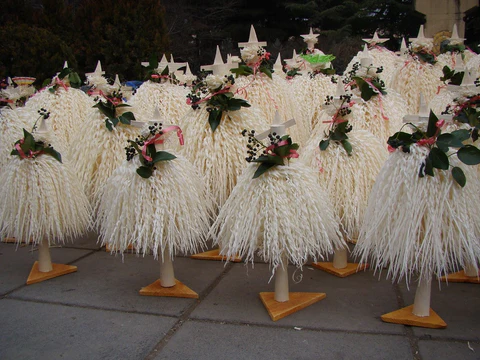

ახალი წელი — დღესასწაული მრავალ კულტურაში ადგილობრივად მიღებული კალენდრის მიხედვით, რომელიც დგება წლის ბოლო დღიდან მომავალი წლის პირველ დღეზე გადასვლის მომენტში. გრიგორიანული კალენდრის მიხედვით, ახალი წელი დგება პირველ იანვარს.
1930-იან წლებში, ოფიციალური საბჭოთა იდეოლოგია იბრძოდა ძველი ტრადიციების წინააღმდეგ და შესაძლოა, ეს ნაძვის ხესაც შეხებოდა. ამიტომაც, ზოგიერთი ადამიანი, ნაძვის ხის სახლში წასაღებად იყენებდა კონტრაბასის ფუტლარს, რათა არასასურველი თვალისგან დაეფარა მისი სახლში მიტანა[1]. სასაათო სარტყლების მიხედვით, ახალი წლის აღნიშვნა პირველად ყოველთვის იწყება წყნარ ოკეანეში, კირიბატის კუნძულებზე[2]. უკანასკნელები კი ძველ წელს აცილებენ კვლავ წყნარ ოკეანეში მდებარე კუნძულ მიდუეის მცხოვრებლები[3]. ზოგიერთი ქვეყანა ახალ წელს მთვარის კალენდრის მიხედვით აღნიშნავს. ძველ რომში ეს დღე ეძღვნებოდა იანუსს — არჩევნის, კარებისა და ყოველივე საწყისის ღმერთს. იანვარმა სახელწოდება სწორედ იანუსის პატივსაცემად მიიღო, რომელსაც გამოსახავდნენ ორი სახით: ერთი იყურებოდა წინ, მეორე კი — უკან[4].

ახალი წლის ტრადიცია საქართველოში ახალი წლის ტრადიცია საქართველოში მრავალფეროვანია და ქვეყნის ყოველი კუთხე განსხვავებულად აღნიშნავს მას. ადგილობრივები საახალწლო სამზადისს ორი ან ერთი თვით ადრე იწყებენ, რომ ახალი წლის ღამე ჯადოსნურად აღნიშნონ. და, თუ თქვენ ჯერ ისევ არ იცით სად გაატაროთ ახალი წელი ზღაპრულად, გაეცანით ჩვენს სტატიას, სადაც ბევრ სასარგებლო ინფორმაციას მიიღებთ. ქართული კერძები, ტრადიცია, გართობა, ზეიმი, მხიარულება მეგობრებისა თუ ოჯახის წევრების წრეში და ახალი წლის ღამეს მეტი არც არაფერი სჭირდება იდეალურობისთვის. ასე რომ, ჩვენ მზად ვართ გიამბოთ მეტი თუ როგორ აღინიშნება ახალი წლის დაუვიწყარი ღამე საქართველოში.
ჩიჩილაკს ამზადებდნენ თხილის მსხვილი ჯოხისაგან. ჯოხს ჯერ გაახურებდნენ მეტი დრეკადობისათვის, კანს გააცლიდნენ და მახვილი დანით ბოლოდან წვერისაკენ იწყებდნენ თხელი ბურბუშელების ათლას. ბურბუშელას წვერიდან ერთი გოჯის დაშორებამდე უწყვეტად გაიტანდნენ და ზეაკეცავდნენ. ოსტატი ასობით გრძელ ბურბუშელას აჭრიდა და აკეცავდა. მათ ჩიჩილაკის ან „ბასილას წვერი“ ერქვა. აკეცილ ბურბუშელებს შემდეგ ისევ ღერძზე გადმოფენდნენ და გამოვიდოდა ხის მსგავსი საგანი, რომელსაც ძირზე უმაგრებდნენ სადგარს. ზედა წვეროს ჯვარედინად ჩაჩეხავდნენ და შიგ ჯვრის სახედ ჩასვამდნენ წვერწამახულ ჯოხებს, რომელთა ბოლოებზე ჩამოაცვამდნენ ორ ბროწეულს ან ვაშლს, ორ სფერულ კვერცხს, ე. წ. ყვინჩილებს. ჩიჩილაკზე ჰკიდებდნენ გაპუტულ შაშვს, რომელისაც ფრთისა და ბოლოს ბუმბულს უტოვებდნენ. სამკაულს, ფერად ძაფებს, ფოჩიან კანფეტს. იმერეთში იცოდნენ ჩიჩილაკის ენდროთი შეფერადება.